在有效市场假说提出的20年后，有效市场假说的理论基础和实证检验证据都受到了挑战。保持有效市场的关键力量：套利行为远比这一理论的提出者想象的脆弱和有限从目前的理论发展看，两条线索互相竞争，互相促进，共同发展，基于信息不完全、不对称和一般均衡理论的模型在解释金融市场异常方面有明显不足；但行为金融还不能有效地应用于金融产品定价，并且现有理论模型本身缺乏广泛的经验证据支持。
EMH基于三个逐渐放松的假定之上，共同点是，至少套利者是理性的，他们有能力保持市场的有效。Samuelson在1965年的研究和Mandelbrot在1966年的研究指出在一个由理性风险中性投资者组成的竞争市场中，因为证券的基本价值和价格是遵循随机游走规律的，所以收益是不可知的。因而在遵循随即游走的情形下，要获得经过风险调整后的超额收益是不可能的。为了获得超额利润，投资者必须承担风险，所以这些超额利润是对承担风险的合理报酬。
然而将一般大众，特别是投资者假定为一直是完全理性，很难令人信服。Fischer Black在1986年的研究表明投资者依据的是噪音而非信息。
很多迹象表明，投资者的行为在绝大多数情况下并非符合经济理性最大化的假定。
投资者并不看重他们最终获得财富的绝对水平，而更关注对于某一参照标准来说他们得与失的量，并且这一标准会因时因地而不断变化。
人会尽可能避免遭受损失，Kahneman和Tversky在1979年提出的前景理论表明投资者亏损函数的斜率比获利函数大，Odean在1998的研究表明投资者为了避免损失，在股票套牢时不愿意止损卖出。
Mehra和Prescott在1985以及Benartzi和Thaler在1995 年关于股权溢价之谜的阐述表明投资者不愿意广泛地持有股票。
Kahneman和Tversky在1973的研究表明，对不确定性后果进行预期时，个人的行事原则常常会违反贝叶斯原则和概率最大化理论。人们在思考时遵循启发式思维方式，经常会用短期的历史数据来预测不确定的未来，并试图找出这些过去发生的事情的表征意义有多大。当过分相信这些事件的表征意义时，他们往往忽视这些近期事件的发生仅仅是偶然发生、而非符合他们建立的“模型”的事实。投资者可能会把一些公司近期盈利快速增长的短暂历史扩展到未来，从而过度超高那些热门股的股价，但同时他们忘记了从统计上说树再高也高不过天的道理。
对一个既定问题每个人的选择不同是因为该问题呈现给他们的表现方式不同，由此每个人也就用不同方法去解决问题。例如投资人不仅仅只是观察到短期股票收益的波动，而是发现投资于股票的长期收益相对高于投资于债券的话，他们就会将财产投向股票。
还有迹象表明，人们并不只是偶然偏离理性，而且经常以同样的方式偏离，他们买卖行为之间有很大的相关性。
与此相关的最经典的社会现象即是羊群效应，Scharfstein和Stein在1990年的研究表明，代理人存在业绩压力，他们选择其他经理人买进的组合，以免落在别人后边，给人留下无能的印象。因而他们人为地在投资组合中增加近期表现不错的股票，抛出那些表现欠佳者。
有效市场的维持依赖于套利者，然而现实中的套利不仅充满风险，而且作用有限。首先套利者们不可能找到完全相同的替代品，与此同时价格偏差在消失前会继续错下去。
许多研究成果都对有效市场假说产生了的挑战。有效市场假说表明价格能够快速、准确地反映信息，这在弱式有效市场中首先遇到了挑战。De Bondt和Thaler在1985年对股票价格的长期趋势进行了分析，他们将前三年表现最好和最差的公司编组，看他们此后五年投资与两种组合所得到的收益情况。这个情况很难用风险的差异来解释（CAPM），可能的原因时投资者的过度反应。
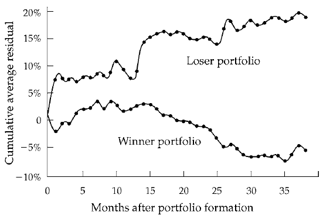
Jegadeesh和Titman在1993年对于股票价格的短期趋势进行了分析，并建立了动量理论：单只股票过去6-12个月的股价走势有助于预测同方向未来的价额走势。
类似的挑战在半强式有效市场更为明显。
小公司股票收益率明显大于大公司股票，市值排名前10%的股票在历史上的平均收益率为9.84%，显著低于市值排名后10%股票的平均收益率13.83%，小公司股票还有明显的1月效应，即它们1月份收益平均比大公司高4.8%，不过这一效应在过去15年中消失了。
Fama和French在1992年的研究以及Lakonishok等人在1994年的研究表明，市账率高的公司与低的公司相比，收益要相对低得多，而且前者的市场风险比后者高，这一现象在世道不好、经济衰退的时候表现得更为突出。
有效市场假说表明，价格在消息真空时无趋势性波动，1987年的黑色星期一强力地反驳了这一点。Cutler 等人在1991研究了战后美国股市单日波动最大50家公司股价变化，许多没有明显的消息变化。Wurgler和Zhuravskaya在1999年的研究表明股票纳入标普500实际上使平均股价升高了3.5%，这种现象非暂时，随着指数基金对这类股票持有比重的相对提高，增幅在增大。
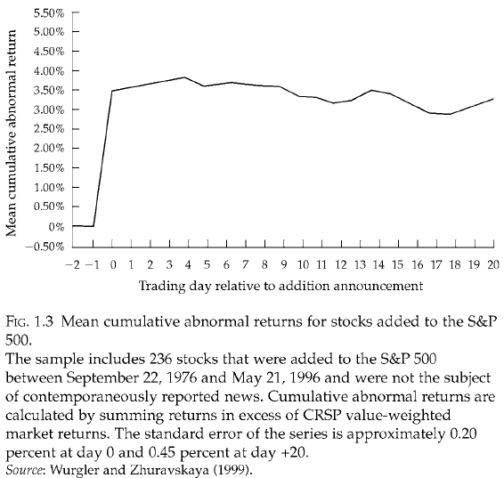
行为金融学研究的是，在竞争性市场中，人为什么做出错误决策，但它也不是简单地分析一些人为什么会犯傻、会迷惘、会有偏见。搞清楚人为什么会有偏见与迷惘的本质特征难度很大，也是个见仁见智的问题。行为金融理论试图跳出这种争论，而把人会犯错、会迷惘、带有偏见引入到竞争性金融市场分析中，因为在这一市场中至少还有一些套利者是完全理性的。然后去考察当不同类型的投资者相互交易时，价格和其他显示市场业绩的信号会发生怎样的变化。有效市场仅是一些极端情况下才出现的情形，在现实环境中这种情形不可能存在。
行为金融学有两个理论基础：
模型假设：
结论：金融市场中的噪音交易者将会：
如果噪音交易者的证券组合主要集中于受噪音交易者风险影响的资产，他们平均的投资收益可能比套利者相对要高。（噪音交易者因为较多地承受了自己带来的高风险而获得了比套利者更高的风险补偿，尽管是他们扭曲了价格）。
然而我们不能做噪音交易者，原因如下：
现实生活中的情况对套利者而言更为糟糕：
不同于开放式基金，封闭式基金发行的基金发行的基金份额数量固定，这些基金份额可在证券市场中转让交易，投资者如果想将手中持有的基金份额提前与基金到期日前变现，他只能将其持有的份额卖给其他投资者，而不能像开放式基金那样按每份基金的净资产现值（NAV）要求被赎回。
与上一个模型的关联：这里的封闭式基金就近似于风险资产（虽然本质上是无风险资产），而封闭式基金所持有的资产就近似于无风险资产。
结论：
上述现象的解释：
实证检验：（横截面数据）
反应不足：投资与该公司股票的平均收益在好消息公布后的一段时间内比坏消息公布后的同样时段获利要多。Bernard在1992年依据宣布的公司盈利信息包含意外的大小分成10组，标准化的意外盈利（某公司在某个给定季度的盈利与1年前同样季度盈利的差值经公司盈利的标准偏差平均换算而成）在组成资产组合的60个交易日内，由最高SUE组成的股票组合获得的经过风险调整后的累计收益比由最低SUE组成的股票组合高出4.2%
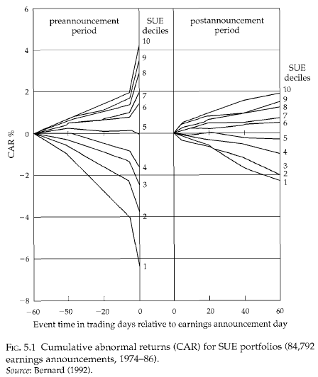
反应过度：随着一系列而不是一条利好消息的发布，证券平均收益低于一连串利空消息发布后的平均收益的现象。De Bondt和Thaler在1987年的研究，Fama和French在1992年的研究以及 Lakonishok等人在1994年的研究表明，相对于资产和公司盈利价值被高估的各种股票，往往是那些在过去几年盈利高速增长的公司股票，在未来获得的风险调整收益反而相对较低，而那些被低估的股票却反而会有高的风险调整收益。从下表可以看出，不论按账面值/市值的比率还是安现金收入流量/价格比率来测算，每年按十分位数分组的有投资价值的股票与热门股票的收益最大相差8-10%
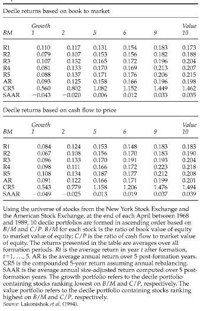
Edwards在1968年开创性地研究了人的守旧性，个人能按正确方向更新他已落后的思维，但相对于理性贝叶斯标准有些差距。在对公司后续盈利形成新的估计时，投资者未能合理地整合新的公司盈利数据和自己已有的信息，相对于那些形成个人先前思维观念的证据，他们常常会低估那些有用的统计数据。Tversky和Kanneman在1974年的研究显示人的表征性启发式的思维方法，人会按以下几个方面来判断不确定事件和样本：（1）样本与母体总体在本质特征上的相似度（2）样本产生过程对显著特征的反应程度。
例如，我们会将他喜欢运动（样本符合好运动员的特征）认识为他喜欢运动而且他是一个很好的与动员。 一个人被告知硬币实际出现的结果是正面的概率为70%，在职过n此后出现的总是正面，下图为人知过程：
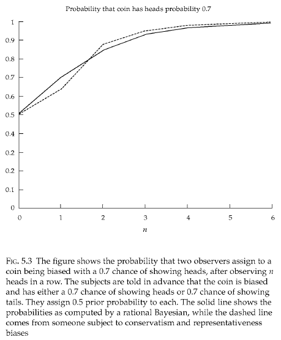
正反馈投资策略分析解释了在信息真空情况下的动量源，亦即价格沿趋势波动的原因。噪音交易者在价格泡沫阶段只对价格过去的变化感兴趣，而对其他消息的反应非常麻木，他们的行为在交易中存在着正反馈交易行为，即在价格升高时买进证券，在价格下跌时卖出证券。Black在1988年的研究表明在财富水平提高时，投资者愿意承担更大的风险。而套利者对未来噪音交易者的需求变化并无任何特别的信息优势当正反馈现象存在时，理性套利者只会使市场变得更不稳定。他们对有效性没有强烈的信念
比特币作为一种新兴的、机具前景的虚拟货币，正逐渐进入人们的眼球，随著比特币交易量的逐渐攀升，运用统计套利的可行性也逐渐增强，我们以技术分析为例：
回顾技术分析的三大假设：
1.市场行为包含一切
2.市场价格沿趋势变化
3.历史会重演
利用价格的趋势性的基本理念或者说最容易想到的一个想法就是看一看今天的收益率与昨天的收益率，或者说t时刻的收益率与t-1时刻的收益率有没有相关性，经过一系列的回归，笔者惊讶的发现，比特币的价格居然存在著十分稳固的负相关性！
过去100000笔交易
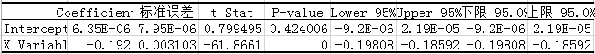
过去200000笔交易
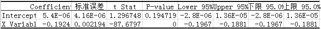
过去300000笔交易
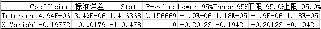
这一反直觉的现象令笔者疑惑，为此我又收集上证指数的所有历史价格资讯进行回归分析，这一次与我们的直觉较相符：
最近5575个交易日
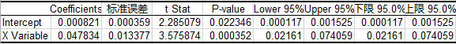
最近2579个交易日
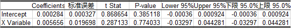
最近1579个交易日
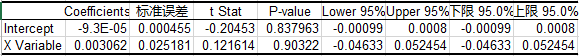
最近579个交易日
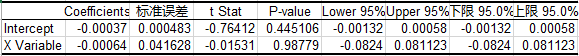
可以看到，随著庄股时代的落幕，散户时代的告别，价格的趋势性正在逐渐减弱，以至于最终t时刻的价格与t-1时刻的价格几乎没有相关性了。
最后谈一谈比特币价格具有负相关性的原因，个人认为比特币作为一种虚拟货币，参与者以技术大牛居多，因此存在著大量的自动化交易（与笔者这几天看盘下来的感受比较符合），而这些自动化交易大多想当然地运用了价格的趋势性，所以价格波动非常剧烈，一旦出现某个趋势性型号就会有一大堆自动单出现，这导致了价格时刻处在过度反应与纠正的过程中，t时刻与t-1时刻的负相关性也就很大程度上归因于是自动交易的产物了。
在历史上，诸多泡沫事件具有共同的特征与发展过程，如下表所示：
| 泡沫名称 | 启动 | 掌握内情者的反应 | 泡沫的维持 | 权威机构的吹捧 | 泡沫破灭 | 政治上的反响 |
|---|---|---|---|---|---|---|
| 荷兰郁金香泡沫（17世纪50年嗲） | 花叶病毒导致郁金香异常艳丽，荷兰沸腾 | 选育郁金香；由于只能无性繁殖且生长缓慢，内部人购进郁金香花枝 | 开发出对郁金香投机的合约，可在公证前签字；交易出现 | 1637年 | ||
| 南海泡沫（1710-1720年） | 兑换政府债券获利，被认为垄断了与西班牙在美洲殖民地的贸易 | 内部人士预先买进可转换债务的指标，随后全额兑出获利 | 建立咖啡馆连锁网点用于投机买卖，签订新协议 | 政府介入，皇室参与 | 1720年 | 事后处罚组织者；限制采用公司制形式 |
| 密西西比泡沫（1717-1720年） | 对新世界贸易快速增加，劳（Law）作为一名融资组织者的成功 | 劳德赚钱计划和有权对法国债务证券化 | 政府支持；劳的银行大量放贷支持进一步购买 | 官方支持，奥尔良逮捕了批评劳德人，如巴黎和其他议会的首领 | 1720年 | 劳垮台，法国金融改革的努力让步知道1787年重新开始 |
| 英国第1次铁路风潮（1845-1846年） | 萧条结束；新的运输方式前景看好 | 规划了许多铁路 | 乔治˙哈德逊的庞氏骗局（运用铁路公司的资本支付最新的红利） | 国会通过法案统一政府提出的铁路建设的每一个方案；乔治˙哈德逊与伦敦社会各界良好的关系 | 没有崩溃、逐渐降温 | 改革会计标准；要求只能用盈利支付红利，而不能用资本金 |
| 美国1873年铁路热潮与崩溃 | 内战结束；美国政府开发西部 | 政府对铁路建设予以补贴 | 增加铁路建设特许证书；预期补贴将会持续 | 亨利˙瓦娜姆˙普尔和查尔斯˙弗朗西斯˙亚当斯 | 1873年乔伊库克公司破产；19世纪70年代中期萧条开始 | |
| 阿根廷贷款热（19世纪80年代） | 世界市场对阿根廷大宗农产品需求旺盛；早期投资者获利丰厚 | 投资从英国流向阿根廷 | 在伦敦证交所发行新证券；创立合股公司开发阿根廷土地 | 阿总统对巴恩斯公司势态表示出的乐观态度（希望不出现破产）总体上误导了国外投资者 | 巴恩斯公司在1890年破产 | 军事政变；对国外资本歧视的法规出台 |
| 20世纪20年代佛罗里达地产热 | 冬季漫长的气候；人口逐渐集中；20世纪20年代的繁荣 | 铁路的开通；迈阿密的发展；房地产的开发 | 开设分公司，建立网络销售佛罗里达的土地 | 威廉姆森˙基宁˙布莱恩炒热佛州地产；市长和开发商关系密切 | 1926年 | 诈骗者被起诉 |
| 20世纪20年代美国股市泡沫 | 20世纪20年代经济快速增长；第一次世界大战后通货紧缩 | 大量发行股票；创立新的封闭式基金 | 地区性交易所建立；抵押贷款和经纪人贷款增加 | 受到库利奇、胡佛、梅隆和费雪的吹捧 | 1929年10月及以后 | 格拉斯-斯蒂格尔法；证监会成立；公共事业控股公司法出笼；罗斯福竞选成功 |
| 20世纪20年代公用事业股票热 | 电力需求增加；规模经济 | 高负债操作；扩张规模以获得规模经济 | 创立公用事业控股公司，采用阶梯式管理 | 1929年10月及以后 | 大公司阶梯，田纳西流域管理局建立；对公用事业部门出台了大量管制措施 | |
| 20世纪60年代美国的联合大企业合并热 | 连续20多年股价的上升，投资于成长股获利丰厚 | 出现了大批专门的联合大企业；哈罗德˙杰宁的ITT、特克隆公司、特勒尼公司 | 股票互换创造出引人注目的盈利 | 哈佛大学的捐款在国家学生市场扩展计划中占了较大的比重；麦克乔治˙邦迪鼓动机构投资者大胆主动买入股票 | 1970-1971年 | 改革会计实际操作制度；威廉姆森法出台 |